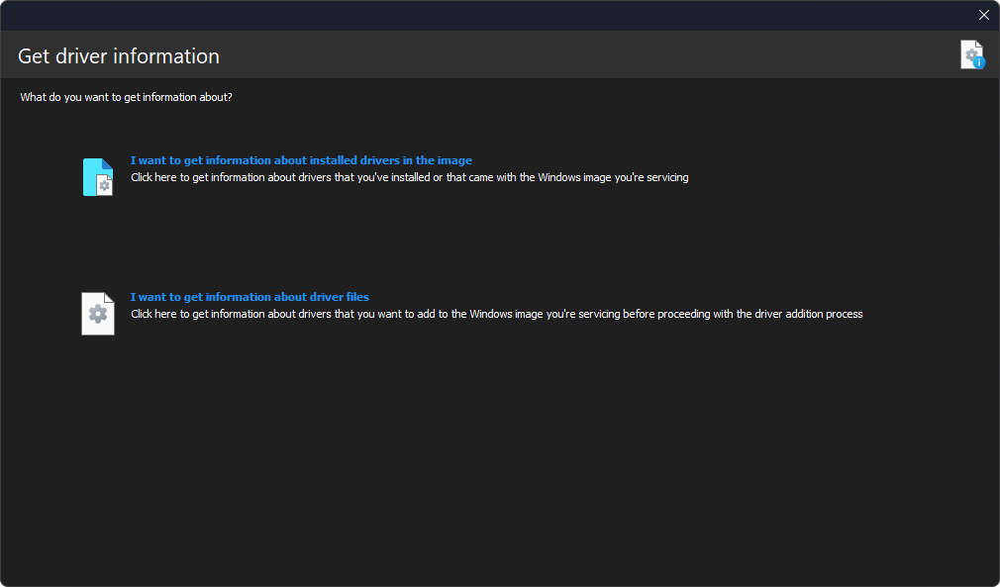
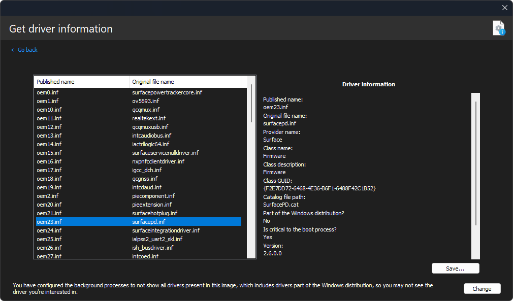
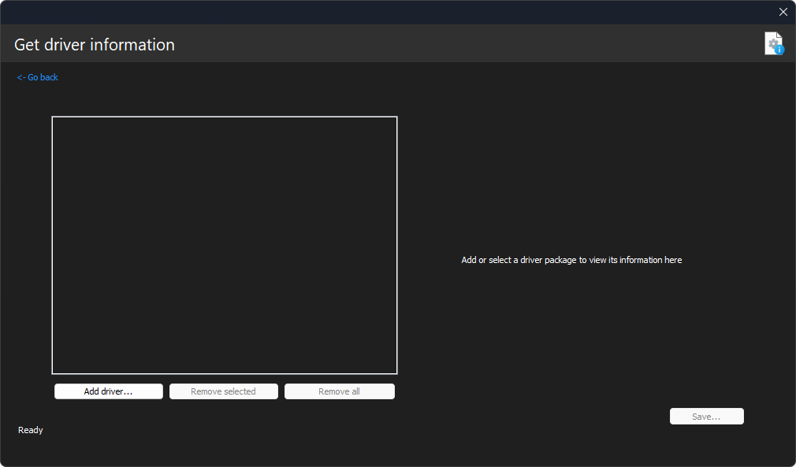
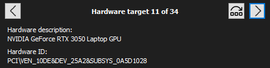

Driver information

With DISMTools you can get the information about installed drivers, or about driver files that you want to add or are interested in learning more about. This supports Windows images and installations of every type.
This action is supported on DISMTools 0.3.1 and newer.
Usage
-
When launching the dialog for the first time in the execution of the program, you'll see the main menu (shown in the screenshot above). From here you can access one of the 2 information modes by clicking its respective link:
- I want to get information about the installed drivers in the image opens the installed driver view. All installed drivers of the image or installation are shown in the list on the left side. To get information about an installed driver, select it from the list. You'll then see its information on the right

- I want to get information about driver files opens the driver file view. In this mode, you have to specify the drivers and add them to the list, which you can do by specifying them from the file picker, or by dropping them from an elevated program. If the program successfully detected information about a driver file, you'll be able to see its information by selecting it. Otherwise, the entry is automatically removed

-
You can go back to the main screen by clicking the link on the top left
NOTE: the amount of installed drivers that are listed is determined by the background process settings. By default, drivers that come with the Windows distribution aren't listed, to decrease the time background processes take when getting driver information. The program will give you the option to configure these processes to detect all drivers.
Going through hardware targets
A driver package (file) may target multiple devices. Thus, knowing more about a specific target may take a long time and be more complicated.
When that is the case, DISMTools lets you easily go through all targets thanks to the controls on the top.

The controls do the following:
- The Next button goes to the next hardware target. This button is disabled when you get to the last hardware target
- The Previous button goes to the previous hardware target. This button is disabled when you get to the first hardware target
- The Jump button lets you jump to a specific hardware target
Saving this information
You can save this information to a report file by clicking the Save button on the bottom right and specifying a target file. Do note that this option is disabled in the driver file view if no drivers were specified.
Also note that, if you have background processes configured to not detect all drivers, you will be asked if you want to save the information of all of them.